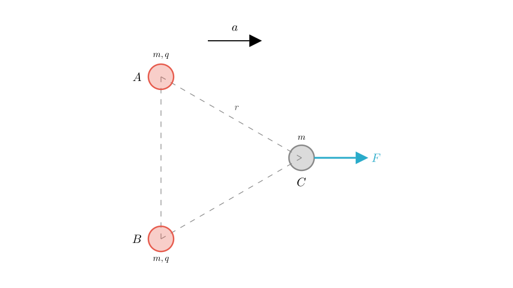
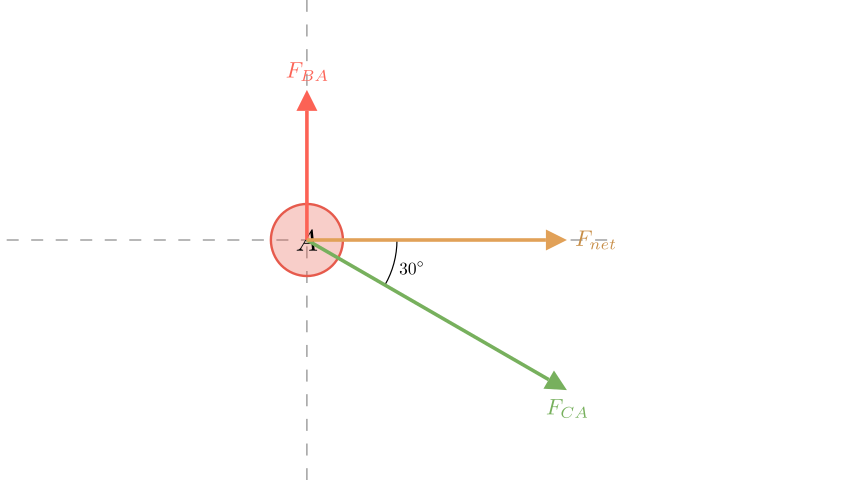
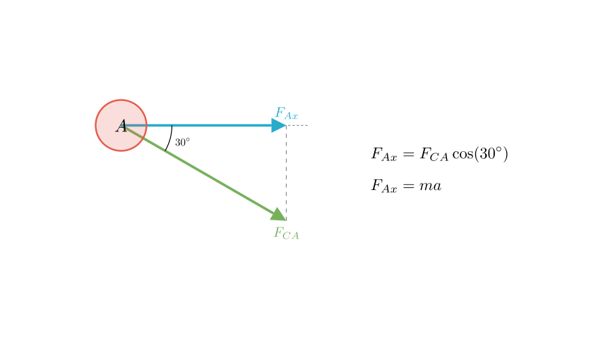
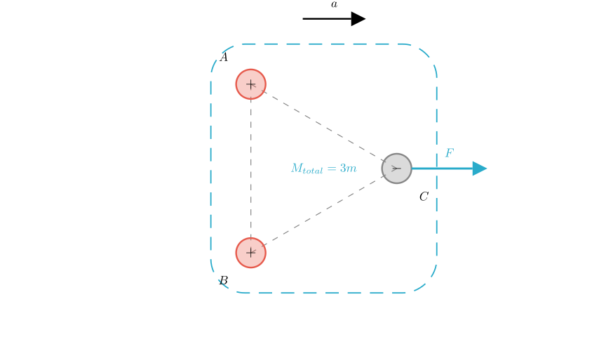

Problem Statement: As shown in the figure, three charged small spheres A, B, and C are fixed on a smooth, insulated horizontal surface. Their masses are all $m$, and the distance between any two spheres is $r$. Spheres A and B carry positive charges, both with magnitude $q$. A horizontal force $F$ is applied to sphere C, and simultaneously, the three spheres are released. To ensure that the distance $r$ between the three spheres remains unchanged during the motion, calculate: (1) The polarity and magnitude of the charge on sphere C. (2) The magnitude of the horizontal force $F$.
Solution Approach: Since the distances between the spheres remain constant, the system maintains its equilateral triangle shape and moves as a rigid body. This implies that all three spheres share the same acceleration vector $a$. We will analyze the forces acting on one of the spheres (Sphere A) to determine the unknown charge of C using component analysis. Then, we will apply Newton's Second Law to the entire system to find the external force $F$.

Step 1: Determine the Polarity of Sphere C
Let's analyze the forces acting on sphere A.

Step 2: Calculate the Magnitude of Charge C ($q_C$)
We apply Coulomb's Law, where $k$ is the electrostatic constant. The magnitude of the force between any two charges $q_1, q_2$ separated by distance $r$ is $F = k \frac{|q_1 q_2|}{r^2}$.
Vertical Force Balance on A: The upward repulsive force from B must equal the downward vertical component of the attractive force from C.
Balancing the vertical components ($\sum F_y = 0$): $$F_{BA} = F_{CA} \sin(30^\circ)$$
Substituting the Coulomb expressions: $$k \frac{q^2}{r^2} = \left( k \frac{q \cdot q_C}{r^2} \right) \cdot \frac{1}{2}$$
Solving for $q_C$: $$q = \frac{q_C}{2} \implies q_C = 2q$$
Answer (1): Sphere C carries a negative charge with magnitude $2q$.

Step 3: Determine the Acceleration ($a$)
Now we look at the horizontal forces on Sphere A to find the system's acceleration. The only horizontal force acting on A is the horizontal component of the attraction from C.
$$F_{Ax} = F_{CA} \cos(30^\circ)$$
Substitute $F_{CA} = k \frac{q(2q)}{r^2} = \frac{2kq^2}{r^2}$: $$F_{Ax} = \left( \frac{2kq^2}{r^2} \right) \cdot \frac{\sqrt{3}}{2} = \frac{\sqrt{3}kq^2}{r^2}$$
According to Newton's Second Law for Sphere A ($F_{net} = ma$): $$ma = \frac{\sqrt{3}kq^2}{r^2} \implies a = \frac{\sqrt{3}kq^2}{mr^2}$$

Step 4: Calculate the External Force $F$
We can now treat the three spheres (A, B, and C) as a single system with total mass $M_{total} = m + m + m = 3m$.
The internal electrostatic forces between A, B, and C cancel out for the system as a whole. The only external horizontal force is the applied force $F$.
Using Newton's Second Law for the whole system: $$F = M_{total} \cdot a$$
Substitute the acceleration we found in Step 3: $$F = 3m \cdot \left( \frac{\sqrt{3}kq^2}{mr^2} \right)$$
$$F = \frac{3\sqrt{3}kq^2}{r^2}$$
Final Answer: (1) Sphere C is negatively charged with a charge quantity of $2q$. (2) The magnitude of the horizontal force is $F = \frac{3\sqrt{3}kq^2}{r^2}$.